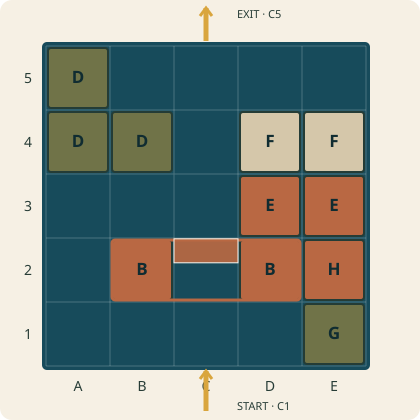
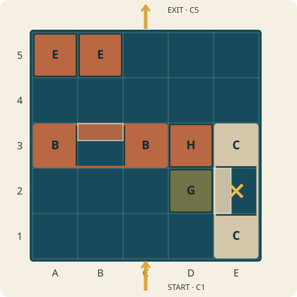
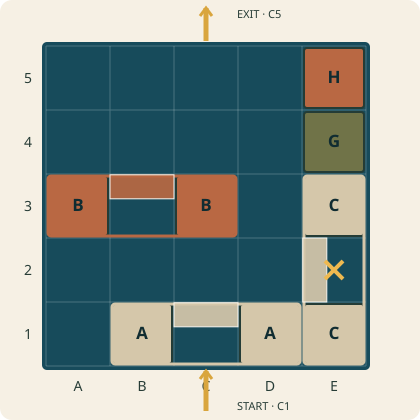

Build the town. Let the ferry through.
Loose ALoose C

Begin: Place only the pictured modules. Empty cells are available for the loose pieces and ferry.
Hold the pictured clues in place. Place every loose module upright on the grid, using quarter-turns. Reserve each whole bridge strip, including its opening; modules may not overlap. No stacking. Move the ferry from C1 to C5 along orthogonal cell-center lines, through both high bridges, without revisiting a cell. Keep the cabin aimed toward the far edge; slide sideways on horizontal steps. Cross each bridge opening straight and perpendicular to its strip. During the trip, do not lift the ferry or move architecture. The low gate rejects the cabin. Between trials, lift and rearrange loose pieces; keep the clues. To reset, return to the setup picture.
Symbolic top view. Offset colored bands show rear bridge spans; match their facing. × marks the low gate. Colors do not constrain placement. More than one solution is allowed.
Build the town. Let the ferry through.
Loose ALoose DLoose F

Begin: Place only the pictured modules. Empty cells are available for the loose pieces and ferry.
Hold the pictured clues in place. Place every loose module upright on the grid, using quarter-turns. Reserve each whole bridge strip, including its opening; modules may not overlap. No stacking. Move the ferry from C1 to C5 along orthogonal cell-center lines, through both high bridges, without revisiting a cell. Keep the cabin aimed toward the far edge; slide sideways on horizontal steps. Cross each bridge opening straight and perpendicular to its strip. During the trip, do not lift the ferry or move architecture. The low gate rejects the cabin. Between trials, lift and rearrange loose pieces; keep the clues. To reset, return to the setup picture.
Symbolic top view. Offset colored bands show rear bridge spans; match their facing. × marks the low gate. Colors do not constrain placement. More than one solution is allowed.
Build the town. Let the ferry through.
Loose DLoose ELoose F

Begin: Place only the pictured modules. Empty cells are available for the loose pieces and ferry.
Hold the pictured clues in place. Place every loose module upright on the grid, using quarter-turns. Reserve each whole bridge strip, including its opening; modules may not overlap. No stacking. Move the ferry from C1 to C5 along orthogonal cell-center lines, through both high bridges, without revisiting a cell. Keep the cabin aimed toward the far edge; slide sideways on horizontal steps. Cross each bridge opening straight and perpendicular to its strip. During the trip, do not lift the ferry or move architecture. The low gate rejects the cabin. Between trials, lift and rearrange loose pieces; keep the clues. To reset, return to the setup picture.
Symbolic top view. Offset colored bands show rear bridge spans; match their facing. × marks the low gate. Colors do not constrain placement. More than one solution is allowed.
Hold the pictured clues in place. Place every loose module upright on the grid, using quarter-turns. Reserve each whole bridge strip, including its opening; modules may not overlap. No stacking. Move the ferry from C1 to C5 along orthogonal cell-center lines, through both high bridges, without revisiting a cell. Keep the cabin aimed toward the far edge; slide sideways on horizontal steps. Cross each bridge opening straight and perpendicular to its strip. During the trip, do not lift the ferry or move architecture. The low gate rejects the cabin. Between trials, lift and rearrange loose pieces; keep the clues. To reset, return to the setup picture.
A and B: high bridges. C: low gate. D: L-shaped courtyard. E and F: two-cell buildings. G and H: single-cell towers.
Bridge feet occupy the two ends of a three-cell strip. Its opening belongs to that module; never place another module there. The offset colored band shows the rear bridge span; match its position when setting clues or reproducing a solution. Building outlines are symbolic footprints, not literal roof silhouettes.
Stop if the ferry touches blocked architecture, cannot clear an opening, leaves the board except at C5, revisits a cell, or misses either high bridge. Reset the ferry to C1 and rearrange loose modules before another trial.
The first card introduces headroom. The second asks you to protect a detour. The third asks you to arrange solid buildings around fixed bridges. These are different placement tasks; no measured difficulty or human playtest is claimed.
This set contains three edited challenges. The aspirational 24-card set has not been produced. The 2 / 4 / 8 counts describe footprint arrangements with checked representative poses, not every physically distinguishable facing. Match the shown rear-span orientation to reproduce solutions. Physical manufacture and hands-on play remain unverified.